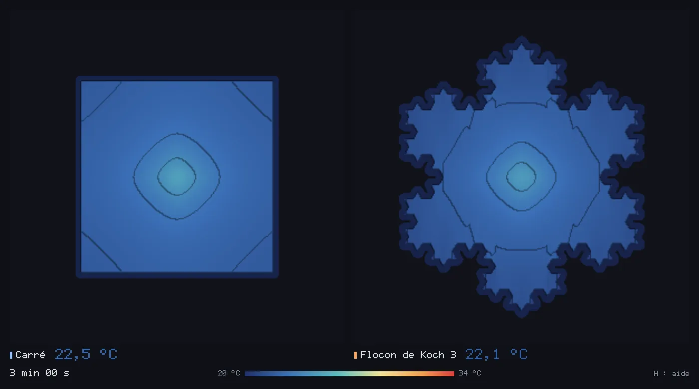
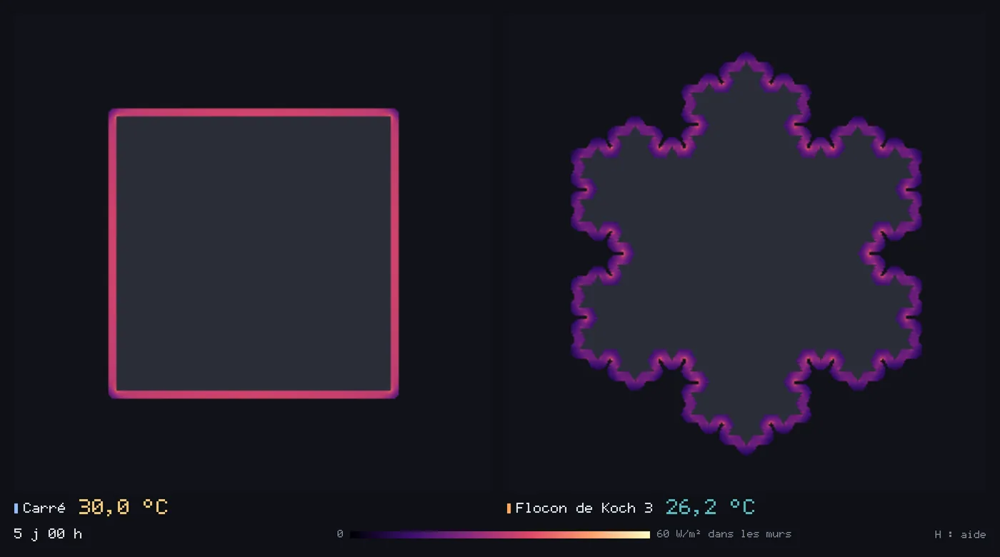

ProjectsProjets / 01
Heat diffusion and fractal geometriesDiffusion thermique et géométries fractales
A personal research project that grew out of my TIPE — a research project carried out during French preparatory classes and presented at the engineering schools' entrance exams. The TIPE was done in a pair on the shared theme “fractals and architecture”; this simulation is entirely my own work, and I have rebuilt and extended it on my own since November 2026.
Un projet de recherche personnel né de mon TIPE (travail d'initiative personnelle encadré), mené en classe préparatoire et présenté aux concours des écoles d'ingénieurs. Le TIPE était fait en binôme sur le thème commun « fractales et architecture » ; cette simulation est entièrement mon travail, et je l'ai reprise et étendue seul depuis novembre 2026.
Same floor area: does a fractal-shaped room shed heat better than a square one?
À aire égale, une pièce fractale évacue-t-elle mieux la chaleur qu'une pièce carrée ?
Finite volumes, implicit ADI scheme with the Thomas algorithm, conjugate gradient; checked against an exact solution.
Volumes finis, schéma implicite ADI avec l'algorithme de Thomas, gradient conjugué ; validé sur une solution exacte.
heat loss per degree, depth-3 Koch snowflake vs square
de chaleur évacuée par degré, flocon de Koch de profondeur 3 face au carré
error against the exact solution on 1.25 cm cells
d'erreur face à la solution exacte, mailles de 1,25 cm
Key resultsRésultats
- The fractal sheds heat better, up to a point. A depth-3 Koch snowflake loses 66 % more heat per degree of temperature difference than the square. At depth 4 the gain falls back to 44 %: the details (9 cm) are thinner than the wall (20 cm), which fills them in.
- La fractale évacue mieux, jusqu'à un certain point. Le flocon de Koch de profondeur 3 évacue 66 % de chaleur en plus par degré d'écart que le carré. À la profondeur 4, le gain retombe à 44 % : les détails (9 cm) sont plus fins que le mur (20 cm), qui les bouche.
- An empirical rule for the optimal depth. A level of detail helps as long as the wall is thinner than that detail: depth n stops paying off beyond a wall thickness ec ≈ 0.86 ℓn (ℓn: detail size at depth n; measured at 36 m²). Hence nopt = ⌊log₃(0.86 s / e)⌋.
- Une règle empirique de la profondeur optimale. Un niveau de détail sert tant que le mur est plus fin que lui : la profondeur n cesse d'être utile au-delà d'une épaisseur ec ≈ 0,86 ℓn (ℓn : taille des détails du niveau n ; établi à 36 m²). D'où nopt = ⌊log₃(0,86 s / e)⌋.
- Wall length is not what matters. A crenellated square with the same perimeter as the snowflake matches it while its notches are wide, then collapses all at once (+6 % instead of +66 %). Across all shapes and wall thicknesses, heat loss tracks the outer wall surface (log correlation 0.82), not the inner perimeter (0.46).
- Ce n'est pas la longueur du mur qui compte. Un carré crénelé de même périmètre que le flocon fait aussi bien tant que ses créneaux sont larges, puis s'effondre d'un coup (+6 % au lieu de +66 %). Sur toutes les formes et épaisseurs, la chaleur évacuée suit la surface extérieure du mur (corrélation des logarithmes : 0,82), pas le périmètre intérieur (0,46).


MethodMéthode
- Model. Horizontal cross-section of a room in physical units: air stirred by convection, modelled as an effective conductivity; 20 cm concrete walls; surface resistances from ISO 6946; outside held at 20 °C.
- Modèle. Coupe horizontale d'une pièce en unités physiques : air brassé représenté par une conductivité effective ; murs en béton de 20 cm ; résistances superficielles de la norme ISO 6946 ; extérieur à 20 °C.
- Finite volumes, conservative by construction: the energy balance closes to machine precision.
- Volumes finis, conservatifs par construction : le bilan d'énergie boucle à la précision machine.
- Time stepping: Douglas-Rachford alternating-direction implicit scheme. Each row and column is a tridiagonal system solved in O(n) with the Thomas algorithm; unconditionally stable, where an explicit scheme would need Δt ≈ 0.004 s.
- Pas de temps : schéma implicite par directions alternées (Douglas-Rachford). Chaque ligne et colonne est un système tridiagonal résolu en O(n) par l'algorithme de Thomas ; stable pour tout pas de temps, là où un schéma explicite imposerait Δt ≈ 0,004 s.
- Steady state solved directly by diagonally preconditioned conjugate gradient: about 10 s on a 1200 × 1200 grid instead of 5 to 12 simulated days.
- Régime établi résolu directement par gradient conjugué préconditionné par la diagonale : une dizaine de secondes sur une grille de 1200 × 1200, au lieu de 5 à 12 jours simulés.
- Parametric sweep in Python: 21 wall thicknesses (5 to 45 cm) and two control shape families to separate the effect of the fractal from the effect of wall length.
- Balayage paramétrique en Python : 21 épaisseurs de mur (5 à 45 cm) et deux familles de formes témoins pour séparer l'effet de la fractale de celui de la longueur du mur.
Validation
Exact solution. A circular room, whose temperature profile is known in closed form, run through the unmodified simulation code at three resolutions: error on the conductance of −1.5 %, −0.85 % and −0.45 % (first-order convergence). Without the surface corrections, the error stays stuck at +14 % at every resolution — a bias that would have favoured the fractal.
Solution exacte. Une pièce circulaire, dont le profil de température est connu exactement, simulée avec le code inchangé à trois résolutions : erreur sur la conductance de −1,5 %, −0,85 % et −0,45 % (convergence d'ordre 1). Sans les corrections de surface, l'erreur reste bloquée à +14 % à toutes les résolutions — un biais qui aurait favorisé la fractale.
Grid convergence on the real shapes: the conductance changes by 0.03 % (Koch 0) to 1 % (Koch 4) between 1.25 cm and 0.625 cm cells.
Convergence en maillage sur les vraies formes : la conductance ne varie plus que de 0,03 % (Koch 0) à 1 % (Koch 4) entre des mailles de 1,25 cm et de 0,625 cm.
Each test exposed a real defect in the original model (diffusivity used in place of conductivity, float precision stalling the solver, one-pixel walls 15 % too conductive), each fixed and documented.
Chaque test a révélé un vrai défaut du modèle d'origine (diffusivité utilisée à la place de la conductivité, précision float qui figeait le calcul, murs d'un pixel 15 % trop conducteurs), chacun corrigé et documenté.


LimitationsLimites
- Uniform surface exchange (main limitation): in narrow notches, convection and radiation are weaker in reality, which would reduce the gain. Next step: radiation view factors and notch-dependent convection.
- Échanges de surface uniformes (limite principale) : dans les creux étroits, convection et rayonnement sont en réalité plus faibles, ce qui réduirait le gain. Prochaine étape : facteurs de forme pour le rayonnement, convection selon l'ouverture des creux.
- One floor area: the empirical rule is measured at 36 m²; other areas would tell whether the ratio ec/ℓ is universal.
- Une seule aire : la règle empirique est établie à 36 m² ; d'autres aires diraient si le rapport ec/ℓ est universel.
- Effective air conductivity is an order of magnitude only; a sensitivity study is still to do.
- La conductivité effective de l'air n'est qu'un ordre de grandeur ; une étude de sensibilité reste à faire.